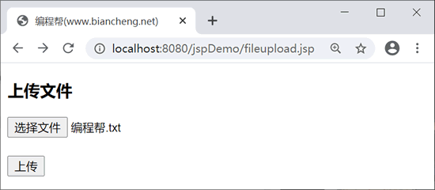
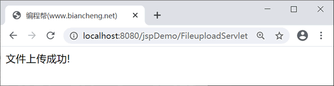

JSP文件上传（Commons-FileUpload）
文件上传就是对文件进行读写，需要编写大量的代码来实现，而且容易发生异常。幸运的是，有很多实用的工具，可以帮助我们实现文件上传的功能，其中应用比较多的是 Commons-FileUpload 组件。本节我们在 JSP 中使用 Commons-FileUpload 组件来实现文件上传。
Commons-FileUpload 组件具有以下特点：
Commons-FileUpload 组件依赖于 FileUpload 和 Commons，需要 commons-fileupload-xx.jar 和 commons-io-xx.jar 文件。
创建上传文件表单时，需要注意以下几点：
打开控制台可以看到文件的上传路径，根据路径可以找到上传的文件。该示例控制台输出内容如下：
Commons-FileUpload 组件具有以下特点：
- 使用简单：Commons-FileUpload 可以内嵌到 JSP 页面中，所以只需要编写少量的代码就可以完成文件的上传功能。
- 能够全程控制上传内容：使用 Commons-FileUpload 组件提供的对象及操作方法，可以获得上传文件的信息，即文件名称、类型和大小等。
- 能够控制上传文件的大小和类型：为了避免在上传过程中出现异常数据，Commons-FileUpload 组件提供了相应的方法来控制上传文件。
Commons-FileUpload 组件依赖于 FileUpload 和 Commons，需要 commons-fileupload-xx.jar 和 commons-io-xx.jar 文件。
- commons-fileupload-xx.jar 下载地址：https://commons.apache.org/fileupload/
- commons-io-xx.jar 下载地址：https://commons.apache.org/io/
Commons-FileUpload组件API
下面我们介绍一下 Commons-FileUpload 组件的接口和实现类。1. ServletFileUpload类
ServletFileUpload 类用于实现文件上传操作，常用方法如下：| 方 法 | 说 明 |
|---|---|
| public void setSizeMax(long sizeMax) | 设置上传文件总量的最大值 (包含文件和表单数据) |
| public List parseRequest(HttpServletRequest req) | 解析 form 表单提交的数据，返回一个 FileItem 实例的集合 |
| public static final boolean isMultipartContent(HttpServletRequest req) | 判断请求信息中的内容是否是”multipart/form-data“类型，是则返回 true，否则返回 false。 |
| public void setHeaderEncoding(String encoding) | 设置转换时所使用的字符集编码 |
2. FileItem接口
FileItem 接口用于封装单个表单字段元素的数据，一个表单字段对应一个 FileItem 实例，本节示例中使用的是其实现类 DiskFileItem。FileItem 接口提供的常用方法如下：| 方 法 | 说 明 |
|---|---|
| public boolean isFormField() | 用于判断 FileItem 类对象封装的数据是一个普通文本表单字段，还是一个文件表单字段，如果是普通表单字段则返回 true，否则返回 false。因此，可以使用该方法判断是否为普通表单域，还是文件上传表单域。 |
| public String getName() | 获取文件上传的文件名 |
| public String getFieldName() | 返回表单字段元素的 name 属性值 |
| public long getSize() | 获取上传文件的大小 |
| public String getString() | 将 FileItem 对象中保存的主体内容以一个字符串返回。其重载方法 public String getString(String encoding) 中的参数用指定的字符集编码方式 |
| public void write() | 将 FileItem 对象中保存的主体内容保存到指定的文件中。 |
3. FileItemFactory接口与实现类
创建 ServletFileUpload 实例需要依赖 FileItemFactory 工厂接口。DiskFileItemFactory 是 FileItemFactory 接口的实现类，该类的常用方法如下。| 方 法 | 说 明 |
|---|---|
| public void setSizeThreshold(int sizeThreshold) | 设置内存缓冲区的大小 |
| public void setRepository(String path) | 设置临时文件存放的目录 |
JSP上传文件
JSP 和 HTML Form 标签一起使用，来允许用户把文件上传到服务器。上传的文件可以是文本文件、图像文件或其它任何文档。创建上传文件表单时，需要注意以下几点：
- 表单的 method 属性必须设置为 POST 方法，不能使用 GET 方法。
- 表单 enctype 属性应设置为 multipart/form-data。
- 表单 action 属性应设置为对应的 Servlet，用来处理文件上传的逻辑代码，下面示例中使用 FileUploadServlet 处理逻辑。
- 使用 <input.../> 标签上传单个文件，属性 type="file"。上传多个文件需添加多个 <input .../> 标签。
拓展
表单的 enctype 属性有以下 3 个值：- application/x-www-form-urlencoded：默认值，用于处理少量文本数据的传递。向服务器发送大量的文件或二进制数据时，效率很低。
- multipart/form-data：上传二进制数据，只有使用了 multipart/form-data 才能完整的传递文件数据，进行上传操作。
- text/plain：用于向服务器传递大量文本数据，适用于电子邮件的应用。
示例
在 fileupload.jsp 页面创建上传文件的表单，代码如下。
<%@ page language="java" contentType="text/html; charset=UTF-8"
pageEncoding="UTF-8"%>
<!DOCTYPE html>
<html>
<head>
<title>编程帮(www.biancheng.net)</title>
</head>
<body>
<h3>上传文件</h3>
<form action="/jspDemo/FileuploadServlet" method="post" enctype="multipart/form-data">
<input type="file" name="file" size="50" /> <br /> <br />
<input type="submit" value="上传" />
</form>
</body>
</html>
在 FileuploadServlet 中处理文件上传逻辑，代码如下：
package net.biancheng;
import java.io.File;
import java.io.IOException;
import java.io.PrintWriter;
import java.util.List;
import javax.servlet.ServletException;
import javax.servlet.annotation.WebServlet;
import javax.servlet.http.HttpServlet;
import javax.servlet.http.HttpServletRequest;
import javax.servlet.http.HttpServletResponse;
import org.apache.commons.fileupload.FileItem;
import org.apache.commons.fileupload.disk.DiskFileItemFactory;
import org.apache.commons.fileupload.servlet.ServletFileUpload;
@WebServlet("/FileuploadServlet")
public class FileuploadServlet extends HttpServlet {
private static final long serialVersionUID = 1L;
// 上传文件存储目录
private static final String UPLOAD_DIRECTORY = "upload";
// 设置缓冲区大小
private static final int MEMORY_THRESHOLD = 1024 * 1024 * 3; // 3MB
// 设置上传单个文件的最大值
private static final int MAX_FILE_SIZE = 1024 * 1024 * 40; // 40MB
private static final int MAX_REQUEST_SIZE = 1024 * 1024 * 50; // 50MB
/**
* 文件上传判断逻辑
*/
protected void doPost(HttpServletRequest request, HttpServletResponse response)
throws ServletException, IOException {
// 判断是否为多媒体上传
if (!ServletFileUpload.isMultipartContent(request)) {
// 如果不是则停止
PrintWriter writer = response.getWriter();
writer.println("Error: 表单必须包含 enctype=multipart/form-data");
writer.flush();
return;
}
// 配置fileItem工厂
DiskFileItemFactory factory = new DiskFileItemFactory();
// 设置缓冲区大小
factory.setSizeThreshold(MEMORY_THRESHOLD);
// 设置临时存储目录
factory.setRepository(new File(System.getProperty("java.io.tmpdir")));
// 创建文件上传处理器
ServletFileUpload upload = new ServletFileUpload(factory);
// 设置上传文件大小的最大值
upload.setFileSizeMax(MAX_FILE_SIZE);
// 设置上传文件总量的最大值 (包含文件和表单数据)
upload.setSizeMax(MAX_REQUEST_SIZE);
// 防止上传文件名称乱码
upload.setHeaderEncoding("UTF-8");
// 构造临时路径来存储上传的文件
String uploadPath = getServletContext().getRealPath("/") + File.separator + UPLOAD_DIRECTORY;
// 如果目录不存在则创建
File uploadDir = new File(uploadPath);
if (!uploadDir.exists()) {
uploadDir.mkdir();
}
try {
// 解析请求的内容提取文件数据
@SuppressWarnings("unchecked")
List<FileItem> formItems = upload.parseRequest(request);
if (formItems != null && formItems.size() > 0) {
// 迭代表单数据
for (FileItem item : formItems) {
// 处理表单中不存在的字段
if (!item.isFormField()) {
String fileName = new File(item.getName()).getName();
String filePath = uploadPath + File.separator + fileName;
File storeFile = new File(filePath);
// 在控制台输出文件的上传路径
System.out.println(filePath);
// 保存文件到硬盘
item.write(storeFile);
request.setAttribute("message", "文件上传成功!");
}
}
}
} catch (Exception ex) {
request.setAttribute("message", "错误信息: " + ex.getMessage());
}
// 跳转到 message.jsp
getServletContext().getRequestDispatcher("/message.jsp").forward(request, response);
}
}
在 message.jsp 页面显示是否上传成功，代码如下：
<%@ page language="java" contentType="text/html; charset=UTF-8"
pageEncoding="UTF-8"%>
<!DOCTYPE html>
<html>
<head>
<title>编程帮(www.biancheng.net)</title>
</head>
<body>
${message}
</body>
</html>
选择需要上传的文件，点击上传。运行结果如下：


打开控制台可以看到文件的上传路径，根据路径可以找到上传的文件。该示例控制台输出内容如下：
C:\Users\lenovo\eclipse-workspace\.metadata\.plugins\org.eclipse.wst.server.core\tmp0\wtpwebapps\jspDemo\\upload\编程帮.txt
关注公众号「站长严长生」，在手机上阅读所有教程，随时随地都能学习。内含一款搜索神器，免费下载全网书籍和视频。

微信扫码关注公众号